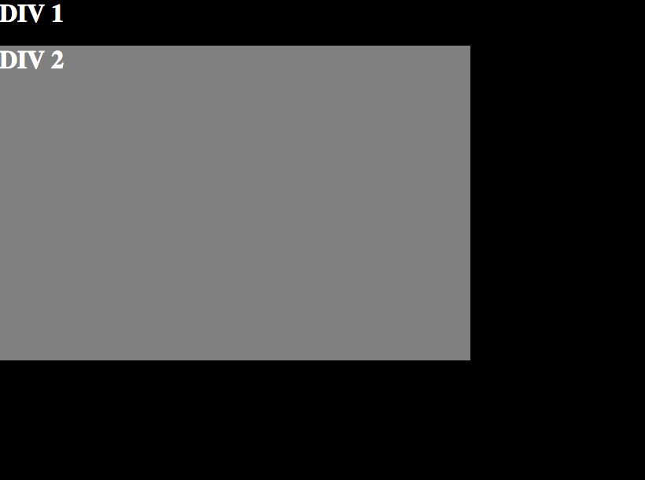
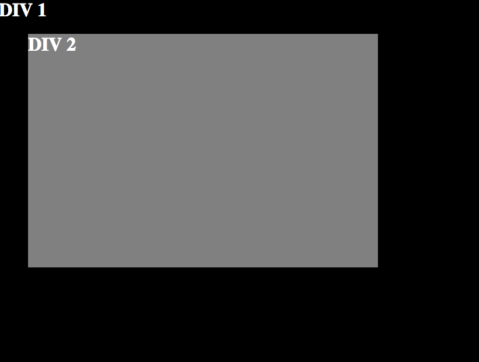

Designers' Favorite Positions: Relative, Absolute, Fixed, and Static
CSS provides powerful mechanisms for positioning elements on the screen -- one of the main mechanisms for positioning is the position property. Designers can choose between four different values: static (the default), relative, absolute, and fixed. These values all do different things and allow designers fine-grained control over the positioning of their elements. Let's go through the differences and some examples of the situations that call for each value.
Static Positioning
position: static;
The default positioning that every HTML element gets is static . The static property doesn't really do much, other than default to displaying elements in the "normal flow" of the page. If you don't change the positioning of an element, it will default to "flowing" into the page in the way that it normally would based on other factors like the float and display properties. Another way of saying this is that static positioning doesn't actually do any positioning of elements!
Relative Positioning
position: relative;
In my opinion, this is the coolest of the positioning values because it allows you to position elements relative to themselves ! This means that you can specify, using position: relative , where you want an element to be positioned relative to its normal position. This is extremely powerful when you can't seem to get things to work how you want in a given browser because you can tweak positions relative to where the element usually is (when things are working). Let's say that you need a div 20px to the left of where it is usually. Instead of re-positioning/re-styling an element from scratch, you can just use relative positioning and then left: 20px; .
The caveat: an element that has been positioned via relative positioning will still take up the space where it normally would be. For example, the div that we moved 20px to the left of where it would normally be will leave a 20px space to the right because it is still actually "there."
Here is an example for clarity -- the first image is using static positioning while the second element is using relative positioning and "left: 50px" on DIV 2 to shift DIV 2 50px to the right of where it would normally be:


Absolute Positioning
position: absolute;
Absolute positioning is exactly what it sounds like -- you position elements on the page in absolute locations. Ignore the paradox that this "absolute" location is actually relative to the closest parent element with either relative or absolute positioning (or if there are none, the HTML element). So, if you set the positioning of an element to absolute, you can then set the top, bottom, right, and left locations. These will then be computed relative to the closest parent element with absolute or relative positioning (or the HTML element), and then the element will be set in that position regardless of the rest of the page flow.
Fixed Positioning
position: fixed;
Finally, an element with fixed positioning will be positioned relative to either the viewport or browser window. This means, that you can do things like "fix" a sidebar so that it stays where it is regardless of scrolling. However, this type of positioning should be used with caution because it can cause usability problems on different device sizes.
Summary
Static positioning is the default, and doesn't actually do any positioning (unless overriding previously positioned elements). Relative positioning is positioning of an element relative to itself. Absolute positioning is positioning of an element relative to another element with absolute or relative positioning. Finally, fixed positioning is positioning of an element relative to the viewport or browser window.
Extra Resources
Learn CSS Positioning in 10 Steps
Makin' Stacks, Yo... Full-Stacks
I am a student at Dev Bootcamp in San Francisco, California. Born and raised in the San Francisco Bay Area. Educated at California Polytechnic State University, San Luis Obispo (physics and philosophy). Graduate education at the University of Chicago (metalogic and philosophy of science).
My partner in crime is named Fiddle -- She likes chasing lizards -- Her best friend (other than me) is named Banjo -- Say Hi!